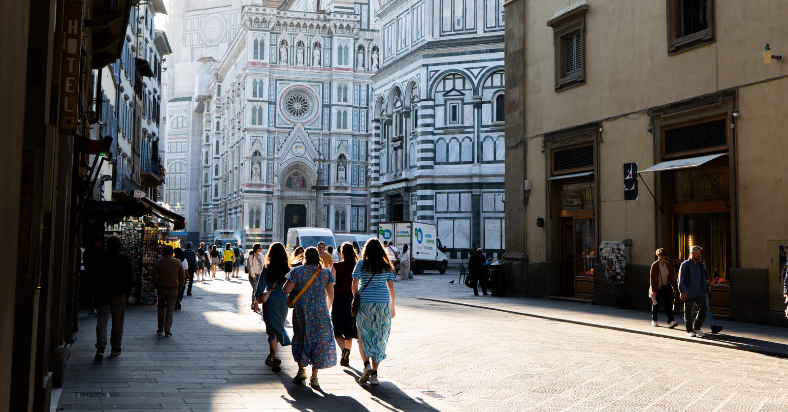

I read, write, walk around with a camera, and, for a paycheck, work on projects that light up your home and fuel your car.
I was born in Kodungallur, though most of my growing up happened in Koolimuttam, a coastal village on the Arabian Sea — that's still home, in the way home stays home no matter how far you move. School was the usual small-town shuffle — Emmad U.P. School, then St. Joseph's in Mathilakam, then higher secondary in Irinjalakuda — and then engineering took over, first Thrissur, then Chennai for a master's at IIT Madras.
After that I sort of scattered. Almost four years in Bastar, where it rains right through to September and the forest turns a green I still can't quite describe properly. Then Assam, a couple of towns in Odisha, and Bangalore, where I got a Honda H'ness and spent most weekends riding it up into the hills — probably the happiest I've been on two wheels. Now I'm in Milan, which still feels a little unreal some mornings. Through all of it I kept writing, one way or another — notebooks first, then a blog, then Facebook, and now it's all finally here in one place. The camera's newer, mostly just an excuse to slow down and actually look at things.
Say hi — @runjyth on Instagram →
Writings
365 pieces of Malayalam prose and poetry, thirteen years of a habit that predates everything else on this site.
Read →The work
Eleven years in EPC and construction planning, currently on Mozambique Rovuma LNG Phase 1.
See the work →Publications
Three books and one paper from graduate research — two of the books are free to download.
See publications →